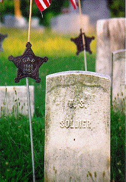

77th PA Starter Index
HIST 403: Digital History of the American Civil
War

77th Pa. Team Starter Index
The 77th Pa. Vol. Regiment had two companies of Franklin men--Co.s A and
H. The Regiment was unusual for the Franklin troops, because it fought
in the West, battling at Shiloh in April 1862 and throughout the
Tennessee and Kentucky campaigns. The Regiment's story will be a
different one from those of its Franklin counterparts in the East.
The Valley project has already assembled a large body of material on this
regiment and its experience: Newspaper articles on the regiments battles
in the West, soldiers' letters home, photographs, and a microfilm copy of
the regimental descriptive book with each soldier and his military
information listed in alphabetical order.
The first step for this team will be to build the military dossier files
on each soldier. The microfilm will be held on reserve in the library
and team members will have access to it at all times. The two companies
will include perhaps 300 soldiers. Data on each will need to be
transcribed and entered into the database form.
Other sources from the Valley project will be given to this team, as they
need them. Here's a partial list of what's already available for this team:
Demo of the Battle of Shiloh (Infant
Stage)
Official Records
Battle of Nashville
Battle of Shiloh
Atlanta Campaign
Battle of La Vergne (Housum)
Battle of La Vergne (Rose)
Battle of Liberty Gap
The Siege of Corinth
Personal Letters
Henry M. Erisman, Co. K
Henry M. Erisman, Co. K
Henry M. Erisman, Co. K
Henry M. Erisman, Co. K
Images
William Collins, Company A
David Daihl, Company A
Davis, Company A
William Eaker, Company A
Charles Hadley, Company G
George Hadley, Company G
John Purvins, Company A
Rohrbacher, Company A
George Skinner, Company A
George Skinner, Company A
Peter Troutman, Company A
B. Woodney, Company A
Col. Frederick S. Stumbaugh
Col. Peter B. Housum
Col. Thomas E. Rose
Relief From Shiloh Memorial
General Don Carlos Buell
General Don Carlos Buell
General Albert S. Johnson
General P.T. Beauregard
General Braxton Bragg
General John B. Hood
General Joseph E. Johnston
General Alexander McCook
General Leonidas Polk
General George H. Thomas
General William S. Rosecrans
"War News" picture
Sketch of Libby Prison; Richmond, VA
Sketch of Libby Prison; Richmond, VA
Sketch of Libby Prison; Richmond, VA
Photograph of Libby Prison (National
Archives
Photograph, Soldiers Recieving Mail in Camp
(National Archives)
Photograph, Chaplain delivering sermon to
soldiers (National Archives)
Photograph, Lee & Gordon's Mills,
Chicakamauga Battlefield (National Archives)
Photograph, Union camp at Kenesaw Mountain, GA
(National Archives)
Photograph, Wounded Soldiers Being
Loaded into Ambulance (Library of Congress)
Photograph, Wounded Soldiers in Camp
Photograph, Union Camp in Atlanta
(Library of Congress)
Resignation of Capt. Albert B.
Stark (National Archives)
Surgeon's certificate authorizing
discharge of Capt. Samuel R. McKesson (National
Archives)
Letter by Pvt. William H. Mechtley to War
Department (National Archives)
Hospital bed sheet for Pvt. Edward Reese
(National Archives)
Letter by Pvt. Edward Reese describing
injury and request for transfer, p.1
Reese letter, p.2 (National
Archives)
Death certificat of Pvt. Adam
Lautenschlager (National Archives)
Maps
Battle of Pittsburg Landing from The
New York Herald, April 10, 1862
Movements of Sherman at Resaca, from
The New York Herald, May 25, 1864
Movements of Sherman at Tunnel Hill, from
The New York Herald, May 9, 1864
Position at Murfreesboro, from The New
York Herald, December 31, 1863
Victory at Murfreesboro, from The New
York Herald, January 3, 1864
The Rebels Flee from Murfreesboro, from
The New York Herald, January 6, 1864
Strategy of Corinth, from The New York
Herald, June 1, 1862
Victory at Corinth, from The New York
Herald, May 31, 1862
Movements in Georgia and Tennessee, from
The New York Herald, September 19, 1863
Surrender of Chambersburg to Stuart, from
The New York Herald, October 12, 1862
Newspaper Articles
Franklin Repository, March 22
1865--"Echanged Prisoners"
Valley Spirit, January 15, 1862
--"Letter from the 77th"
Valley Spirit, January 15,
1862--"War News"
Valley Spirit, January 22,
1862--"Col. Stumbaugh"
Valley Spirit, January 22,
1862--"Rallying Song of the 77th"
Valley Spirit, January 22,
1862--"The Bloody 77th"
Valley Spirit, January 22,
1862--"A Soldier Dead"
Valley Spirit, January 22,
1862--"The Difference"
Valley Spirit, January 22,
1862--"Soldier's Letters"
Valley Spirit, January 29,
1862--"Relief for the Soldiers"
Valley Spirit, February 12,
1862--"Recruits Wanted"
Valley Spirit, April 16,
1862--"Chaplain of the 77th"
Valley Spirit, April 23,
1862--"Franklin County Soldiers....Pittsburg Landing"
Valley Spirit, April 23,
1862--"Great Victory at Pittsburg Landing"
Valley Spirit, April 30,
1862--"Letter from the Battlefield"
Valley Spirit, May
14,1862--"Col. Housum"
Valley Spirit, May 21,
1862--"From the Wars"
Valley Spirit, July 30,
1862--"Letter From the Army"
Valley Spirit, August 13,
1862--"Letter from the Army, by Lochiel"
Valley Spirit, September 3,
1862--"Filling Up the Old Regiments"
Franklin Repository, February 24, 1864--"The Libby Jail Delivery"
Other Resources
List of Battles for 77th Pennsylvania
Organization for Battle of Shiloh
Organization for 77th Campaigns
Bibliography